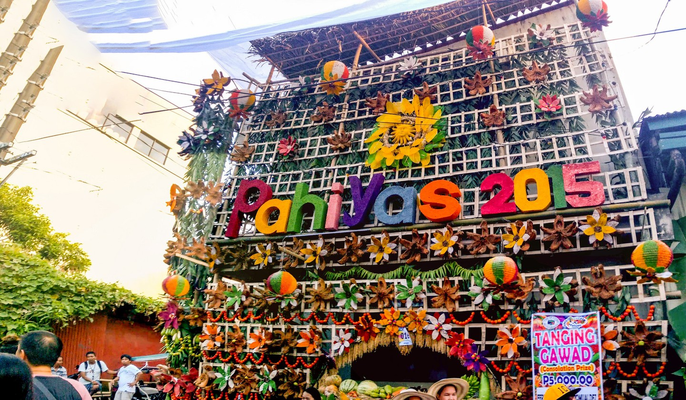
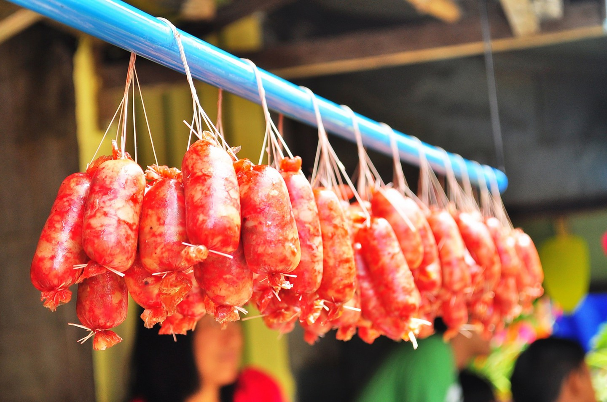

With the Filipinos’ fun-loving spirit and creativity, there’s a handful of grand town fiestas and vibrant festivals celebrated across the Philippines. Among the numerous festivals in the country, the province of Quezon takes pride in its annual colorful harvest festival called
The Pahiyas Festival
Every May 15, the townsfolk of Lucban, Quezon, don their houses with fruits, vegetables and colorful kiping (a leaf-shaped wafer made of rice and dyed with food coloring) in celebration of the Pahiyas Festival. The word ‘pahiyas’ was derived from the word ‘payas’, which means decoration or to decorate. The reason behind such practice dates back to the 15th century, when farmers used to offer their harvests at the foot of Mount Banahaw. Over time, they brought their farm produce at the church in honor of the town’s patron saint – St. Isidore the Laborer, who is the
patron saint of farmers, laborers and peasants.
During that time, farmers would bring their harvest to the town church and the parish priest would bless them as a way to give thanks to the Lord for their bountiful harvest. But as time progressed, the church can no longer accommodate all harvests. It was then agreed upon for the harvests to be displayed in the farmers’ houses instead. Thus, the parish priest would go around the community to bless their harvests.
The Pahiyas Festival Nowadays

Locals believe that keeping the tradition alive was essential because it brought them away from deprivation and misfortune in their town. In May 1963, what was originally a pagan festival transformed into the colorful, grand festival that Filipinos know today. Apart from holding a competition that chooses the house with the most creative design, the festival also included cultural shows, various contests, parades and exhibits that would boost the tourist of the town of Lucban. It was the idea of the Art Club of Lucban’s
Founder and President Fernando Cadeliña Nañawa.
Instead of just putting the agricultural harvest in front of their door steps, the facade of each participating house also put commercial products such as hats, abaniko or hand-held fans, mats, bags, the famous Lucban longganisa (Filipino-style sausages) and of course, the kiping.

The highlight of the Pahiyas Festival comes after the town’s procession where the spirited tradition of ‘Kalas’ takes place. The term literally means to romp away the harvests and decorations from the houses as a symbol of joy and merriment. Indeed, the Pahiyas Festival has become one of the most-sought after festivals across the Philippines, luring in locals from nearby towns and even tourists from other countries.
Source: theculturetrip.com
Kachin Manaw Festival
With the Filipinos’ fun-loving spirit and creativity, there’s a handful of grand town fiestas and vibrant festivals celebrated across the Philippines. Among the numerous festivals in the country,...
Shittaung Pagodas Festival

Among the most popular festival of the Rakhine people of Myanmar, the Shittaung Pagoda Festival is held in April every year...
THE THINGYAN FESTIVAL

The Thingyan Festival, from 13th to 16th April each year; and signifies the end of the hot, dry season, as well as the chance to take stock, reflect and wash away the previous year’s misgivings or bad luck...